# Imports math library
import numpy as np
# Imports plotting library
import matplotlib.pyplot as plt
# Import math Library
import math
plt.style.use('dark_background');
# Define the Rectified Linear Unit (ReLU) function
def ReLU(preactivation):
activation = preactivation.clip(0.0)
return activation
# Define a shallow neural network
def shallow_nn(x, beta_0, omega_0, beta_1, omega_1):
# Make sure that input data is (1 x n_data) array
n_data = x.size
x = np.reshape(x,(1,n_data))
# This runs the network for ALL of the inputs, x at once so we can draw graph
h1 = ReLU(np.matmul(beta_0,np.ones((1,n_data))) + np.matmul(omega_0,x))
y = np.matmul(beta_1,np.ones((1,n_data))) + np.matmul(omega_1,h1)
return y
# Get parameters for model -- we can call this function to easily reset them
def get_parameters():
# And we'll create a network that approximately fits it
beta_0 = np.zeros((3,1)); # formerly theta_x0
omega_0 = np.zeros((3,1)); # formerly theta_x1
beta_1 = np.zeros((1,1)); # formerly phi_0
omega_1 = np.zeros((1,3)); # formerly phi_x
beta_0[0,0] = 0.3; beta_0[1,0] = -1.0; beta_0[2,0] = -0.5
omega_0[0,0] = -1.0; omega_0[1,0] = 1.8; omega_0[2,0] = 0.65
beta_1[0,0] = 0.1;
omega_1[0,0] = -2.0; omega_1[0,1] = -1.0; omega_1[0,2] = 7.0
return beta_0, omega_0, beta_1, omega_1
# Utility function for plotting data
def plot_univariate_regression(x_model, y_model, x_data = None, y_data = None, sigma_model = None, title= None):
# Make sure model data are 1D arrays
x_model = np.squeeze(x_model)
y_model = np.squeeze(y_model)
fig, ax = plt.subplots()
ax.plot(x_model,y_model)
if sigma_model is not None:
ax.fill_between(x_model, y_model-2*sigma_model, y_model+2*sigma_model, color='lightgray')
ax.set_xlabel(r'Input, $x$'); ax.set_ylabel(r'Output, $y$')
ax.set_xlim([0,1]);ax.set_ylim([-1,1])
ax.set_aspect(0.5)
if title is not None:
ax.set_title(title)
if x_data is not None:
ax.plot(x_data, y_data, 'ko')
plt.show()Example 1: univariate regression
We start by considering univariate regression models. Here the goal is to predict a single scalar output \(y \in \mathbb{R}\) from input \(x \in \mathbb{R}^D\) using a model \(f[x,\boldsymbol\phi]\) with parameters \(\boldsymbol\phi\). Following the recipe, we choose a probability distribution over the output domain y. We select the univariate normal distribution (figure 5.3), which is defined over \(y \in \mathbb{R}\).

The univariate normal distribution (also known as the Gaussian distribution) is defined on the real line \(z \in \mathbb{R}\) and has parameters \(\mu\) and \(\sigma^2\). The mean \(\mu\) determines the position of the peak. The positive root of the variance \(\sigma^2\) (the standard deviation) determines the width of the distribution. Since the total probability density sums to one, the peak becomes higher as the variance decreases and the distribution becomes narrower.
This has two parameters (mean \(\mu\) and variance \(\sigma^2\)) and has a probability density function:
\[\begin{eqnarray} Pr(y|\mu,\sigma^2) = \frac{1}{\sqrt{2\pi\sigma^{2}}}\exp\left[-\frac{(y-\mu)^{2}}{2\sigma^{2}}\right]. \end{eqnarray}\]
Second, we set the machine learning model \(f[x,\boldsymbol\phi]\) to compute one or more of the param- eters of this distribution. Here, we just compute the mean so \(\mu= f[x,\boldsymbol\phi]\):
\[\begin{eqnarray}\label{eq:loss_pdf_uni_reg} Pr(y|\mbox{f}[\mathbf{x},\boldsymbol\phi],\sigma^2) = \frac{1}{\sqrt{2\pi\sigma^{2}}}\exp\left[-\frac{(y-\mbox{f}[\mathbf{x},\boldsymbol\phi])^{2}}{2\sigma^{2}}\right]. \end{eqnarray}\]
We aim to find the parameters \(\boldsymbol\phi\) that make the training data \({x_i,y_i}\) most probable under this distribution (figure 5.4). To accomplish this, we choose a loss function \(L[\boldsymbol\phi]\) based on the negative log-likelihood:
\[\begin{eqnarray}\label{eq:loss_normal_full} L[\boldsymbol\phi] &=& -\sum_{i=1}^{I} \log\left[Pr(y_{i}|\mbox{f}[\mathbf{x}_{i},\boldsymbol\phi],\sigma^{2})\right]\nonumber \\ &=&-\sum_{i=1}^{I} \log\left[\frac{1}{\sqrt{2\pi\sigma^{2}}}\exp\left[-\frac{(y_i-\mbox{f}[\mathbf{x}_i,\boldsymbol\phi])^{2}}{2\sigma^{2}}\right]\right]. \end{eqnarray}\]
When we train the model, we seek parameters \(\hat{\boldsymbol\phi}\) that minimize this loss.
Least squares loss function
Now let’s perform some algebraic manipulations on the loss function. We seek:
\[\begin{eqnarray}\label{eq:loss_normal_full2} \hat{\boldsymbol\phi} &=& \mathop{\rm argmin}_{\boldsymbol\phi}\left[-\sum_{i=1}^{I} \log\left[\frac{1}{\sqrt{2\pi\sigma^{2}}}\exp\left[-\frac{(y_i-\mbox{f}[\mathbf{x}_i,\boldsymbol\phi])^{2}}{2\sigma^{2}}\right]\right]\right] \nonumber \\ &=&\mathop{\rm argmin}_{\boldsymbol\phi}\left[-\sum_{i=1}^{I} \left(\log\left[\frac{1}{\sqrt{2\pi\sigma^{2}}}\right] -\frac{(y_i-\mbox{f}[\mathbf{x}_i,\boldsymbol\phi])^{2}}{2\sigma^{2}}\right)\right]\nonumber \\ &=& \mathop{\rm argmin}_{\boldsymbol\phi}\left[-\sum_{i=1}^{I} -\frac{(y_i-\mbox{f}[\mathbf{x}_i,\boldsymbol\phi])^{2}}{2\sigma^{2}}\right]\nonumber \\ &=& \mathop{\rm argmin}_{\boldsymbol\phi}\left[\sum_{i=1}^{I} (y_i-\mbox{f}[\mathbf{x}_i,\boldsymbol\phi])^{2}\right], \end{eqnarray}\]
where we removed the first term between the second and third lines because it doesn’t depend on \(\boldsymbol\phi\). We removed the denominator between the third and fourth lines, as this is just a constant positive scaling factor that does not affect the position of the minimum. The result of these manipulations is the least squares loss function that we originally introduced when we discussed linear regression in chapter 2:
\[\begin{eqnarray}\label{eq:loss_least_squares} L[\boldsymbol\phi] = \sum_{i=1}^{I} \bigl(y_i-\mbox{f}[\mathbf{x}_i,\boldsymbol\phi]\bigr)^{2}. \end{eqnarray}\]
We see that the least squares loss function follows naturally from the assumptions that the predictions are (i) independent and (ii) drawn from a normal distribution with mean \(\mu= \mbox{f}[\mathbf{x}_i,\boldsymbol\phi]\) (figure 5.4).

Equivalence of least squares and maximum likelihood loss for the normal distribution. a) Consider the linear model from figure 2.2. The least squares criterion minimizes the sum of the squares of the deviations (dashed lines) between the model prediction f[xi,ϕ] (green line) and the true output values yi (orange points). Here the fit is good, so these deviations are small (e.g., for the two highlighted points). b) For these parameters, the fit is bad, and the squared deviations are large. c) The least squares criterion follows from the assumption that the model predicts the mean of a normal distribution over the outputs and that we maximize the probability. For the first case, the model fits well, so the probability Pr(yi|xi) of the data (horizontal orange dashed lines) is large (and the negative log probability is small). d) For the second case, the model fits badly, so the probability is small and the negative log probability is large.
Inference
The network no longer directly predicts y but instead predicts the mean \(\mu = \mbox{f}[\mathbf{x},\boldsymbol\phi]\) of the normal distribution over y. When we perform inference, we usually want a single “best” point estimate \(\hat{y}\), so we take the maximum of the predicted distribution:
\[\begin{eqnarray} \hat{y} = \mathop{\rm argmax}_{y}\left[Pr(y|\mbox{f}[\mathbf{x},\hat{\boldsymbol\phi}],\sigma^2)\right]. \end{eqnarray}\]
For the univariate normal distribution, the maximum position is determined by the mean parameter \(\mu\) (figure 5.3). This is precisely what the model computed, so \(\hat{y} = \mbox{f}[\mathbf{x},\hat{\boldsymbol\phi}]\).
Estimating variance
To formulate the least squares loss function, we assumed that the network predicted the mean of a normal distribution. The final expression in equation 5.11 (perhaps surprisingly) does not depend on the variance \(\sigma^2\). However, there is nothing to stop us from treating \(\sigma^2\) as a learned parameter and minimizing equation 5.9 with respect to both the model parameters \(\boldsymbol\phi\) and the distribution variance \(\sigma^2\):
\[\begin{eqnarray} \hat{\boldsymbol\phi},\hat{\sigma}^{2} = \mathop{\rm argmin}_{\boldsymbol\phi,\sigma^{2}}\left[-\sum_{i=1}^{I} \log\left[\frac{1}{\sqrt{2\pi\sigma^{2}}}\exp\left[-\frac{(y_i-\mbox{f}[\mathbf{x}_i,\boldsymbol\phi])^{2}}{2\sigma^{2}}\right]\right]\right]. \end{eqnarray}\]
In inference, the model predicts the mean µ= f[x, ϕ] from the input, and we learned the varianceˆ σ2 during the training process. The former is the best prediction. The latter tells us about the uncertainty of the prediction.
Heteroscedastic regression
The model above assumes that the variance of the data is constant everywhere. However, this might be unrealistic. When the uncertainty of the model varies as a function of the input data, we refer to this as heteroscedastic (as opposed to homoscedastic, where the uncertainty is constant). A simple way to model this is to train a neural network f[x,ϕ] that computes both the mean and the variance. For example, consider a shallow network with two outputs. We denote the first output as f1[x,ϕ] and use this to predict the mean, and we denote the second output as f2[x,ϕ] and use it to predict the variance. There is one complication; the variance must be positive, but we can’t guarantee that the network will always produce a positive output. To ensure that the computed variance is positive, we pass the second network output through a function that maps an arbitrary value to a positive one. A suitable choice is the squaring function, giving:
\[\begin{eqnarray} \mu &=& \mbox{f}_1[\mathbf{x},\boldsymbol\phi] \nonumber \\ \sigma^2 &=& \mbox{f}_2[\mathbf{x},\boldsymbol\phi]^2, \end{eqnarray}\]
which results in the loss function:
\[\begin{eqnarray} \hat{\boldsymbol\phi} = \mathop{\rm argmin}_{\boldsymbol\phi}\left[-\sum_{i=1}^{I} \biggl(\log\left[\frac{1}{\sqrt{2\pi\mbox{f}_2[\mathbf{x}_i,\boldsymbol\phi]^2}}\right] -\frac{(y_i-\mbox{f}_1[\mathbf{x}_i,\boldsymbol\phi])^{2}}{2\mbox{f}_2[\mathbf{x}_i,\boldsymbol\phi]^2}\biggr)\right]. \end{eqnarray}\]

Homoscedastic vs. heteroscedastic regression. a) A shallow neural network for homoscedastic regression predicts just the mean μ of the output distribution from the input x. b) The result is that while the mean (blue line) is a piecewise linear function of the input x, the variance is constant everywhere (arrows and gray region show ±2 standard deviations). c) A shallow neural network for heteroscedastic regression also predicts the variance σ2 (or, more precisely, computes its square root, which we then square). d) The standard deviation now also becomes a piecewise linear function of the input x.
# Let's create some 1D training data
x_train = np.array([0.09291784,0.46809093,0.93089486,0.67612654,0.73441752,0.86847339,\
0.49873225,0.51083168,0.18343972,0.99380898,0.27840809,0.38028817,\
0.12055708,0.56715537,0.92005746,0.77072270,0.85278176,0.05315950,\
0.87168699,0.58858043])
y_train = np.array([-0.25934537,0.18195445,0.651270150,0.13921448,0.09366691,0.30567674,\
0.372291170,0.20716968,-0.08131792,0.51187806,0.16943738,0.3994327,\
0.019062570,0.55820410,0.452564960,-0.1183121,0.02957665,-1.24354444, \
0.248038840,0.26824970])
# Get parameters for the model
beta_0, omega_0, beta_1, omega_1 = get_parameters()
sigma = 0.2
# Define a range of input values
x_model = np.arange(0,1,0.01)
# Run the model to get values to plot and plot it.
y_model = shallow_nn(x_model, beta_0, omega_0, beta_1, omega_1)
plot_univariate_regression(x_model, y_model, x_train, y_train, sigma_model = sigma)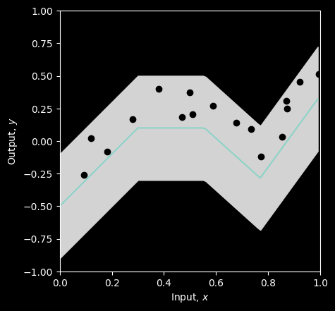
The blue line is the mean prediction of the model and the gray area represents plus/minus two standard deviations. This model fits okay, but could be improved. Let’s compute the loss. We’ll compute the the least squares error, the likelihood, the negative log likelihood.
# Return probability under normal distribution
def normal_distribution(y, mu, sigma):
#the equation for the normal distribution
prob = np.exp(-((y - mu)**2) / (2.0 * sigma**2.0)) / (sigma * np.sqrt(2.0 * np.pi))
return prob
# Let's double check we get the right answer before proceeding
print("Correct answer = %3.3f, Your answer = %3.3f"%(0.119,normal_distribution(1,-1,2.3)))
# Let's plot the Gaussian distribution.
y_gauss = np.arange(-5,5,0.1)
mu = 0; sigma = 1.0
gauss_prob = normal_distribution(y_gauss, mu, sigma)
fig, ax = plt.subplots()
ax.plot(y_gauss, gauss_prob)
ax.set_xlabel(r'Input, $x$'); ax.set_ylabel(r'Probability $Pr(y)$')
ax.set_xlim([-5,5]);ax.set_ylim([0,1.0])
plt.show()Correct answer = 0.119, Your answer = 0.119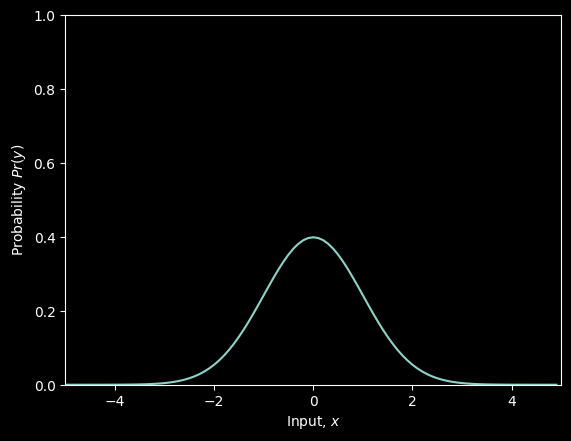
Now let’s compute the likelihood using this function
# Return the likelihood of all of the data under the model
def compute_likelihood(y_train, mu, sigma):
# TODO -- compute the likelihood of the data -- the product of the normal probabilities for each data point
# Top line of equation 5.3 in the notes
# You will need np.prod() and the normal_distribution function you used above
# Replace the line below
# likelihood = #
likelihood = np.prod(normal_distribution(y_train, mu, sigma))
return likelihood
# Let's test this for a homoscedastic (constant sigma) model
beta_0, omega_0, beta_1, omega_1 = get_parameters()
# Use our neural network to predict the mean of the Gaussian
mu_pred = shallow_nn(x_train, beta_0, omega_0, beta_1, omega_1)
# Set the standard deviation to something reasonable
sigma = 0.2
# Compute the likelihood
likelihood = compute_likelihood(y_train, mu_pred, sigma)
# Let's double check we get the right answer before proceeding
print("Correct answer = %9.9f, Your answer = %9.9f"%(0.000010624,likelihood))Correct answer = 0.000010624, Your answer = 0.000010624You can see that this gives a very small answer, even for this small 1D dataset, and with the model fitting quite well. This is because it is the product of several probabilities, which are all quite small themselves. This will get out of hand pretty quickly with real datasets – the likelihood will get so small that we can’t represent it with normal finite-precision math
This is why we use negative log likelihood
# Return the negative log likelihood of the data under the model
def compute_negative_log_likelihood(y_train, mu, sigma):
# negative log likelihood of the data without using a product
nll = -1 * np.sum(np.log(normal_distribution(y_train, mu, sigma)))
return nll
# Let's test this for a homoscedastic (constant sigma) model
beta_0, omega_0, beta_1, omega_1 = get_parameters()
# Use our neural network to predict the mean of the Gaussian
mu_pred = shallow_nn(x_train, beta_0, omega_0, beta_1, omega_1)
# Set the standard deviation to something reasonable
sigma = 0.2
# Compute the negative log likelihood
nll = compute_negative_log_likelihood(y_train, mu_pred, sigma)
# Let's double check we get the right answer before proceeding
print("Correct answer = %9.9f, Your answer = %9.9f"%(11.452419564,nll))Correct answer = 11.452419564, Your answer = 11.452419564For good measure, let’s compute the sum of squares as well
# Return the squared distance between the observed data (y_train) and the prediction of the model (y_pred)
def compute_sum_of_squares(y_train, y_pred):
# TODO -- compute the sum of squared distances between the training data and the model prediction
# Eqn 5.10 in the notes. Make sure that you understand this, and ask questions if you don't
# Replace the line below
sum_of_squares = np.sum((y_train - y_pred)**2)
return sum_of_squares
# Let's test this again
beta_0, omega_0, beta_1, omega_1 = get_parameters()
# Use our neural network to predict the mean of the Gaussian, which is out best prediction of y
y_pred = mu_pred = shallow_nn(x_train, beta_0, omega_0, beta_1, omega_1)
# Compute the sum of squares
sum_of_squares = compute_sum_of_squares(y_train, y_pred)
# Let's double check we get the right answer before proceeding
print("Correct answer = %9.9f, Your answer = %9.9f"%(2.020992572,sum_of_squares))Correct answer = 2.020992572, Your answer = 2.020992572Now let’s investigate finding the maximum likelihood / minimum negative log likelihood / least squares solution. For simplicity, we’ll assume that all the parameters are correct except one and look at how the likelihood, negative log likelihood, and sum of squares change as we manipulate the last parameter. We’ll start with overall y offset, beta_1 (formerly phi_0)
# Define a range of values for the parameter
beta_1_vals = np.arange(0,1.0,0.01)
# Create some arrays to store the likelihoods, negative log likelihoods and sum of squares
likelihoods = np.zeros_like(beta_1_vals)
nlls = np.zeros_like(beta_1_vals)
sum_squares = np.zeros_like(beta_1_vals)
# Initialise the parameters
beta_0, omega_0, beta_1, omega_1 = get_parameters()
sigma = 0.2
for count in range(len(beta_1_vals)):
# Set the value for the parameter
beta_1[0,0] = beta_1_vals[count]
# Run the network with new parameters
mu_pred = y_pred = shallow_nn(x_train, beta_0, omega_0, beta_1, omega_1)
# Compute and store the three values
likelihoods[count] = compute_likelihood(y_train, mu_pred, sigma)
nlls[count] = compute_negative_log_likelihood(y_train, mu_pred, sigma)
sum_squares[count] = compute_sum_of_squares(y_train, y_pred)
# Draw the model for every 20th parameter setting
if count % 20 == 0:
# Run the model to get values to plot and plot it.
y_model = shallow_nn(x_model, beta_0, omega_0, beta_1, omega_1)
plot_univariate_regression(x_model, y_model, x_train, y_train, sigma_model = sigma, title="beta1=%3.3f"%(beta_1[0,0]))
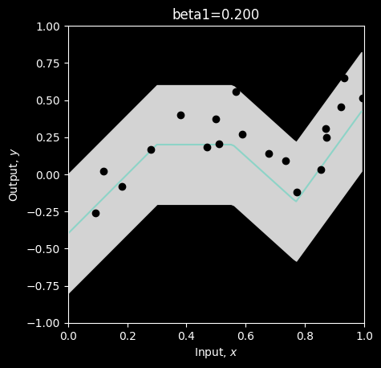
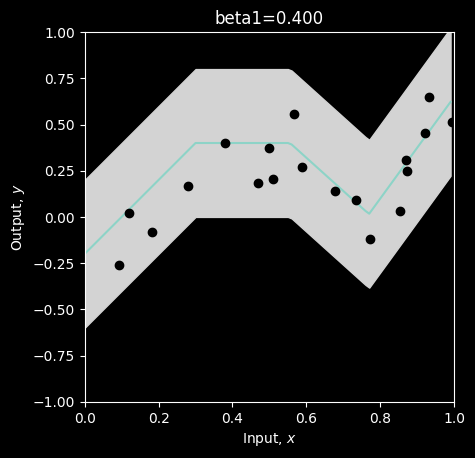
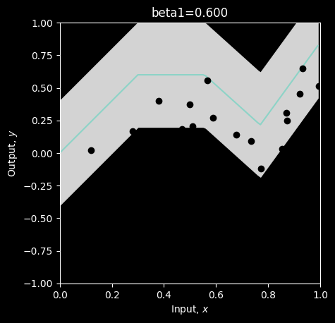
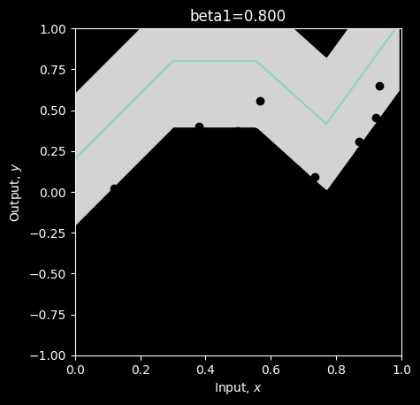
# Now let's plot the likelihood, negative log likelihood, and least squares as a function of the value of the offset beta1
fig, ax = plt.subplots(1,2)
fig.set_size_inches(10.5, 5.5)
fig.tight_layout(pad=10.0)
likelihood_color = 'tab:red'
nll_color = 'tab:blue'
ax[0].set_xlabel('beta_1[0]')
ax[0].set_ylabel('likelihood', color = likelihood_color)
ax[0].plot(beta_1_vals, likelihoods, color = likelihood_color)
ax[0].tick_params(axis='y', labelcolor=likelihood_color)
ax00 = ax[0].twinx()
ax00.plot(beta_1_vals, nlls, color = nll_color)
ax00.set_ylabel('negative log likelihood', color = nll_color)
ax00.tick_params(axis='y', labelcolor = nll_color)
plt.axvline(x = beta_1_vals[np.argmax(likelihoods)], linestyle='dotted')
ax[1].plot(beta_1_vals, sum_squares); ax[1].set_xlabel('beta_1[0]'); ax[1].set_ylabel('sum of squares')
plt.show()--------------------------------------------------------------------------- ValueError Traceback (most recent call last) Cell In[41], line 10 8 ax[0].set_xlabel('beta_1[0]') 9 ax[0].set_ylabel('likelihood', color = likelihood_color) ---> 10 ax[0].plot(beta_1_vals, likelihoods, color = likelihood_color) 11 ax[0].tick_params(axis='y', labelcolor=likelihood_color) 13 ax00 = ax[0].twinx() File ~/opt/anaconda3/lib/python3.9/site-packages/matplotlib/axes/_axes.py:1779, in Axes.plot(self, scalex, scaley, data, *args, **kwargs) 1536 """ 1537 Plot y versus x as lines and/or markers. 1538 (...) 1776 (``'green'``) or hex strings (``'#008000'``). 1777 """ 1778 kwargs = cbook.normalize_kwargs(kwargs, mlines.Line2D) -> 1779 lines = [*self._get_lines(self, *args, data=data, **kwargs)] 1780 for line in lines: 1781 self.add_line(line) File ~/opt/anaconda3/lib/python3.9/site-packages/matplotlib/axes/_base.py:296, in _process_plot_var_args.__call__(self, axes, data, *args, **kwargs) 294 this += args[0], 295 args = args[1:] --> 296 yield from self._plot_args( 297 axes, this, kwargs, ambiguous_fmt_datakey=ambiguous_fmt_datakey) File ~/opt/anaconda3/lib/python3.9/site-packages/matplotlib/axes/_base.py:486, in _process_plot_var_args._plot_args(self, axes, tup, kwargs, return_kwargs, ambiguous_fmt_datakey) 483 axes.yaxis.update_units(y) 485 if x.shape[0] != y.shape[0]: --> 486 raise ValueError(f"x and y must have same first dimension, but " 487 f"have shapes {x.shape} and {y.shape}") 488 if x.ndim > 2 or y.ndim > 2: 489 raise ValueError(f"x and y can be no greater than 2D, but have " 490 f"shapes {x.shape} and {y.shape}") ValueError: x and y must have same first dimension, but have shapes (100,) and (80,)
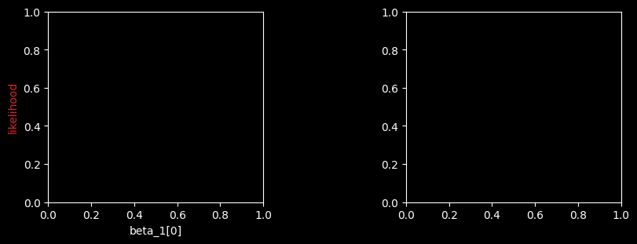
# Hopefully, you can see that the maximum of the likelihood fn is at the same position as the minimum negative log likelihood
# and the least squares solutions
# Let's check that:
print("Maximum likelihood = %3.3f, at beta_1=%3.3f"%( (likelihoods[np.argmax(likelihoods)],beta_1_vals[np.argmax(likelihoods)])))
print("Minimum negative log likelihood = %3.3f, at beta_1=%3.3f"%( (nlls[np.argmin(nlls)],beta_1_vals[np.argmin(nlls)])))
print("Least squares = %3.3f, at beta_1=%3.3f"%( (sum_squares[np.argmin(sum_squares)],beta_1_vals[np.argmin(sum_squares)])))
# Plot the best model
beta_1[0,0] = beta_1_vals[np.argmin(sum_squares)]
y_model = shallow_nn(x_model, beta_0, omega_0, beta_1, omega_1)
plot_univariate_regression(x_model, y_model, x_train, y_train, sigma_model = sigma, title="beta1=%3.3f"%(beta_1[0,0]))Maximum likelihood = 0.000, at beta_1=0.000
Minimum negative log likelihood = 0.000, at beta_1=0.000
Least squares = 0.000, at beta_1=0.000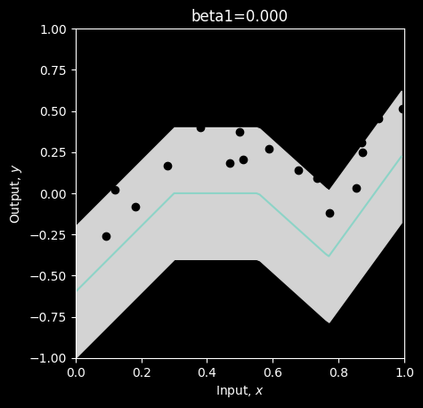
They all give the same answer. But you can see from the three plots above that the likelihood is very small unless the parameters are almost correct. So in practice, we would work with the negative log likelihood or the least squares.
Let’s do the same thing with the standard deviation parameter of our network. This is not an output of the network (unless we choose to make that the case), but it still affects the likelihood.
# Define a range of values for the parameter
sigma_vals = np.arange(0.1,0.5,0.005)
# Create some arrays to store the likelihoods, negative log likelihoods and sum of squares
likelihoods = np.zeros_like(sigma_vals)
nlls = np.zeros_like(sigma_vals)
sum_squares = np.zeros_like(sigma_vals)
# Initialise the parameters
beta_0, omega_0, beta_1, omega_1 = get_parameters()
# Might as well set to the best offset
beta_1[0,0] = 0.27
for count in range(len(sigma_vals)):
# Set the value for the parameter
sigma = sigma_vals[count]
# Run the network with new parameters
mu_pred = y_pred = shallow_nn(x_train, beta_0, omega_0, beta_1, omega_1)
# Compute and store the three values
likelihoods[count] = compute_likelihood(y_train, mu_pred, sigma)
nlls[count] = compute_negative_log_likelihood(y_train, mu_pred, sigma)
sum_squares[count] = compute_sum_of_squares(y_train, y_pred)
# Draw the model for every 20th parameter setting
if count % 20 == 0:
# Run the model to get values to plot and plot it.
y_model = shallow_nn(x_model, beta_0, omega_0, beta_1, omega_1)
plot_univariate_regression(x_model, y_model, x_train, y_train, sigma_model=sigma, title="sigma=%3.3f"%(sigma))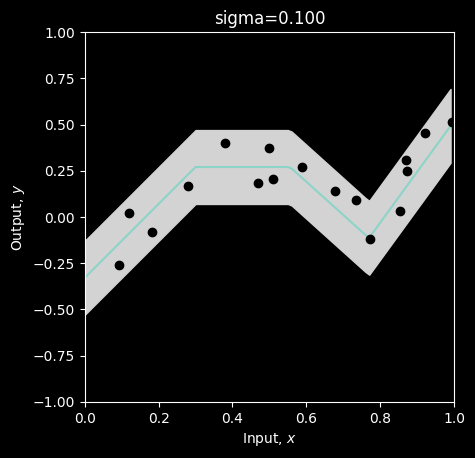
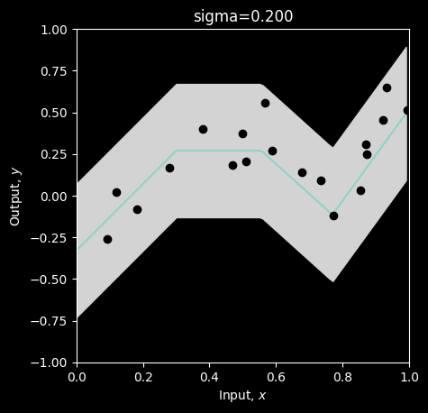
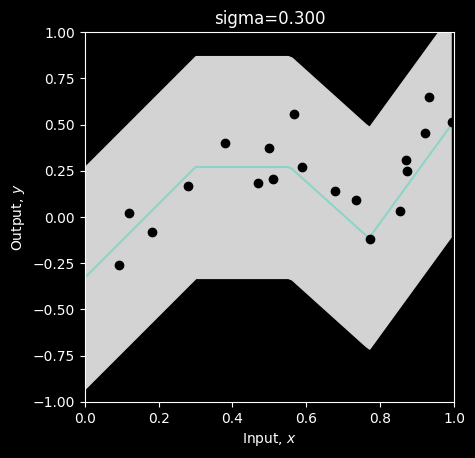
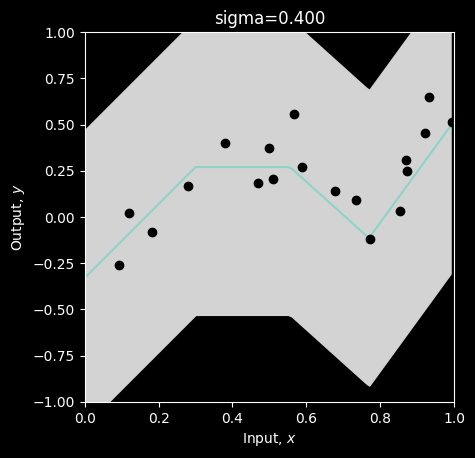
# Now let's plot the likelihood, negative log likelihood, and least squares as a function of the value of the standard deviation sigma
fig, ax = plt.subplots(1,2)
fig.set_size_inches(10.5, 5.5)
fig.tight_layout(pad=10.0)
likelihood_color = 'tab:red'
nll_color = 'tab:blue'
ax[0].set_xlabel('sigma')
ax[0].set_ylabel('likelihood', color = likelihood_color)
ax[0].plot(sigma_vals, likelihoods, color = likelihood_color)
ax[0].tick_params(axis='y', labelcolor=likelihood_color)
ax00 = ax[0].twinx()
ax00.plot(sigma_vals, nlls, color = nll_color)
ax00.set_ylabel('negative log likelihood', color = nll_color)
ax00.tick_params(axis='y', labelcolor = nll_color)
plt.axvline(x = sigma_vals[np.argmax(likelihoods)], linestyle='dotted')
ax[1].plot(sigma_vals, sum_squares); ax[1].set_xlabel('sigma'); ax[1].set_ylabel('sum of squares')
plt.show()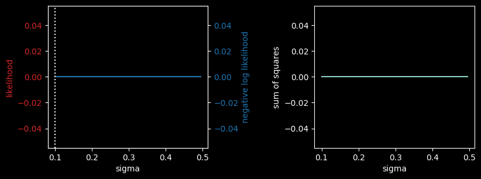
# Hopefully, you can see that the maximum of the likelihood fn is at the same position as the minimum negative log likelihood
# The least squares solution does not depend on sigma, so it's just flat -- no use here.
# Let's check that:
print("Maximum likelihood = %3.3f, at sigma=%3.3f"%( (likelihoods[np.argmax(likelihoods)],sigma_vals[np.argmax(likelihoods)])))
print("Minimum negative log likelihood = %3.3f, at sigma=%3.3f"%( (nlls[np.argmin(nlls)],sigma_vals[np.argmin(nlls)])))
# Plot the best model
sigma= sigma_vals[np.argmin(nlls)]
y_model = shallow_nn(x_model, beta_0, omega_0, beta_1, omega_1)
plot_univariate_regression(x_model, y_model, x_train, y_train, sigma_model = sigma, title="beta_1=%3.3f, sigma =%3.3f"%(beta_1[0,0],sigma))Maximum likelihood = 0.000, at sigma=0.100
Minimum negative log likelihood = 0.000, at sigma=0.100Obviously, to fit the full neural model we would vary all of the 10 parameters of the network in \(\mathbf{\beta_0, \omega_0, \beta_1, \omega_1}\) (and maybe \(\sigma\)) until we find the combination that have the maximum likelihood / minimum negative log likelihood / least squares.
Here we just varied one at a time as it is easier to see what is going on. This is known as coordinate descent.